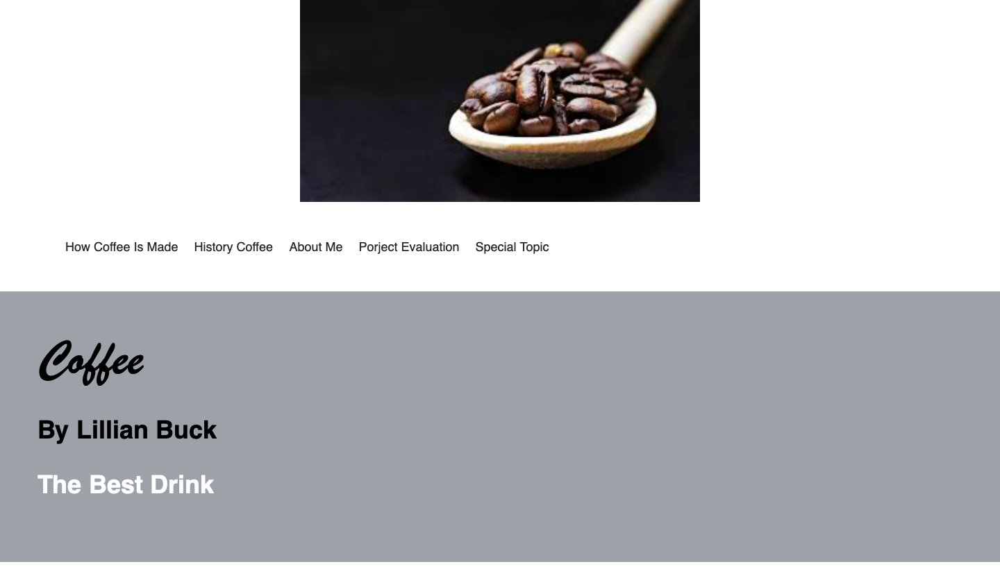

For my Web 1400 final, I designed and built a multi-page website that takes visitors on a journey through the history of coffee, its production process, and other fascinating details. This was my first multi-page build, and it pushed me to navigate the full development process while learning how to implement Flexbox effectively. The project was both a challenge and a milestone in my growth as a web developer.
Challenges: One of the biggest challenges I faced with this project was building a multi-page site for the first time. I had to learn how to structure content across different pages and make sure everything was linked correctly. Another challenge was mastering Flexbox to create layouts that were both functional and visually appealing. Since I was still learning the full development process, I spent extra time troubleshooting and experimenting to ensure consistent styling and a smooth user experience across all pages. Overcoming these challenges taught me a lot about planning, layout design, and the workflow needed for larger web projects..
What I Learned: Through this project, I learned how to structure a multi-page website, create responsive layouts with Flexbox, and troubleshoot challenges across pages—skills that strengthened my overall web development workflow.